IV Programming
18.1.2 Structured Information: Don’t Use Strings to Represent It |
|
|
What is programming to a software developer?
In the context of software development, programming refers to the creation of code that realizes the planned components. And, critically, the artifact that many other people will look at again and again. These people will have to read the code, and they will have to understand how it achieves its purpose, meaning both its functionality and its basic performance.
Sometimes all of this is easy to infer from code. Equally often, some aspects
remain hidden because programming is the result of turning invisible thoughts
into written code. The creator of some code may recall why a variable
contains values of a certain shape; the problem is that some distant piece of
code in a large module or class enforces this shape—
Given this situation, the goal is to create code that allows maintainers to reconstruct the original thoughts quickly. Positively put, code must express a creator’s thoughts as directly, as clearly, and as comprehensively as possible in the chosen programming language. As the preceding three chapters suggest, the clarity Over time, programming languages improve or new languages come about that allow developers to express more of their thinking directly. But this change is slow, and so we must focus on improving code per se. of code depends on a developer’s proper understanding of the nature of software as the sum of proper mindset, plans, and code, plus an awareness of the “big picture” surrounding a software project. This chapter presents ideas on how systematic programming can create easily comprehensible code and how inspections may help programmers recognize problems before they become a big cost factor.
14 Clarity of Code
When panelists consider some piece of code incomprehensible during an inspection, a common reaction is to promise explanatory comments. This reaction completely ignores the nature of comments. As a language construct, they are just a mechanism for adding unchecked words to code. As unchecked words, comments are often out of sync with the surrounding code. The cure is to use comments in a limited number of cases, where they are truly needed and where they tend to remain partially valid.
As for code itself, a range of factors affects its nature as an expression of thoughts. One truly basic factor is the naming of classes, fields, methods, parameters, and even local variables. At the large-scale level, individual developers may be able to influence the design of classes and relationships among classes or the partitioning of a sub-system into modules.
Experience also tells us that choosing a well-suited data representation is a key factor in clarifying the purpose of code. At almost every level of programming, a developer must make a choice, namely, how to represent domain information in the data sub-language of the chosen programming language. Once the choice is made, the respective code must convey how a piece of data is to be interpreted in the domain and how any piece of information is to be represented as data. Indeed, to get this part right, a comment next to data definition is almost always necessary.
The chosen data representation should induce the organization of methods, This is often called encapsulation.specifically their allocation to specific components. Conversely, the design of functions should mirror the data representation. Imagine a function that consumes a union data type with n variants; if the function’s body consists of a conditional with n corresponding branches, a maintainer can easy connect a branch with a variant and make changes accordingly.
Next, code benefits from some abstraction but not too much. Repetitions of code call for the creation of an abstraction and a good name that tells a future reader what the abstraction accomplishes. Then again, a developer should notComplex protocols indicate a gap in a language’s expressive power. abstract in anticipation of repetitions or abstract in ways that call for complex call-back protocols or deep inheritance chains.
Finally, as explained in Principles, in-person inspections are an
amazing tool for simulating the hand-over of code from one developer to
another. In the spirit of social responsibility, presenting and inspecting code
aren’t chores but ways to simplify the lives of others—
15 Comments are Needed in a Small Number of Places
Every programming language supplies a mechanism for adding informal, natural-language phrases to code. The idea is that comments can expose relationships among pieces of code that are difficult or impossible to express in the programming language itself. Sadly, due to their informal nature, commenting isn’t often practiced in university courses, and, as a result, students tend to think of them as a nuisance to be added once the coding is done. Comments have thus become the most abused language construct in the world of software, yielding over-commented, mis-commented, and under-commented software repositories.
Useless Comments The main problem with comments is that they
are often out of sync with the code and thus misleading to a reader. When a
comment is first added, it probably describes the code under consideration in a
correct or close to correct manner. But, as others—
ADD 1 to X // adds 1 to x |
to interpret a data representation, that is, how data relates to information in the problem domain and vice versa;
to state the purpose of a unit of code, meaning what it computes; and
to explain how a complex loop or a generative-recursive method accomplish their purpose.
int current; |
int heatSetting; |
int acSetting; |
Exercise 9. In this problem domain, a thermometer may measure a temperature at 17.1C. How is this temperature represented given the above data representation? Conversely, if current is 781, what temperature does the thermometer display?
What this exercise points out is that a developer tasked with updating this code gets no clue from reading it as to how information about temperatures is represented. The exercise also reminds us that some countries want thermostats that use Celsius while the United States is still using the Fahrenheit scale.
int current; // in 1/10 of Celsius degrees |
int heatSetting; // call for heat when `current` falls below |
int acSetting; // ... for cold air when `current` is above |
This simple example is illustrative of why data
definitions—
program Thermostat () { |
... |
int current; // in 1/10 of Celsius degrees |
int heatSetting; // call for heat when ... |
int acSetting; // ... for cold air when ... |
|
IDecision decide(int current) { |
this.current = current; |
|
if ((current <= heatSetting) && this.heatAvailable()) { |
return new CallForHeat(); |
} else if ((current >= acSetting) && this.acAvailable()) { |
return new CallForAC(); |
} else { |
return new Nothing(); |
} |
} |
} |
Now consider a maintainer reading this code. Even though this code is somewhat simple, question yourself whether it controls all of the thermostat, that is, the thermometer, the actuator, and the external connectivity to the A/C and heater. Or, take a look at decide. What does this method compute? It consists of merely nine lines of code, so it is easy to read. But, should a developer read nine lines to understand a method’s purpose? If a developer has to understand the purpose of ten methods, it means reading and comprehending 90 lines of code.
// implements the controller software for the thermostat |
program Thermostat () { |
... |
// whether `this` should call for heat or ac, |
// depending on the time of the year |
IDecision decide(int current) { |
... |
} |
} |
Once again, this example is simple, and a developer with some understand of the context may have figured out the purpose of either unit with a single glance. In reality, software is large and developers don’t always have the context at their finger tips. These one-liners cost the creator of the program unit little, but create the focus needed to realize a unit properly and help readers quite a bit. Designing Functions, Systematically presents some additional examples and explains a bit more how such purpose statements help.
Recursive methods, complex loops demand explanations. While many
methods are straightforward, some implement complex algorithms that rely on
intricate logical invariants. Sorting algorithms, graph traversals, and
context-sensitive tree traversals are some examples. They may use generative
recursion or loop-based worklist designs. In both cases, it may not be obvious
how the algorithm computes its result or why it terminates. Hence,
both kinds of recursive functions deserve one-line comments, explaining the
how and the why in addition to the what. In case the
developer avoids recursion in favor of a worklist, the comment is best placed
with the looping construct (while, repeat), and it is best formulated
as an accumulator property or a loop invariant. Finally, if an algorithm demands
deep insights into the domain—
Don’t comment code except for the three situations discussed here.
16 The Very Basics
finding the method and noticing it is some 100 lines long;
reading the variable x in its body versus the variable distance; or
encountering a conditional whose then branch is 10 lines long and comes with a one-line else branch.
16.1 Names Matter
Names matter in many contexts. First, literal constants need names. Second, the names of classes help navigate a code base. Third, good names for methods and functions, plus their parameters, can summarize many lines of code as a single line. Finally, introducing well-named, local variables for intermediate results helps readers comprehend the underlying computational process.
100 * 200 |
windowWidth * windowHeight |
In addition to conveying meaning, names for constants also facilitate the adjustment of values. For example, nowadays users sit in front of significantly larger monitors than a decade ago. It’s therefore acceptable to increase the width and height of the imagined window. Doing so with named constants is easy; finding all occurrences of 100 and 200 makes such an adjustment extremely difficult.
Exercise 10. List some constants that don’t need names no matter where they show up in code. What do they have in common?
int moveRight(int distance) { |
.. } |
int moveRight(int shortestDistanceToCarOnTheLeftInCM) { |
.. } |
shortest distance to the car on the left in centimeters
// `distanceCM` denotes the shortest distance to |
// an obstacle to the left of `this` car |
int moveRight(int distanceCM) { |
.. a conversion to inches for the next call .. } |
Exercise 11. Reformulate the moveRight method header imagining that it is all about confirming a reaction to a distance measurement. Ask a peer to review your reformulation and comment on it.
;; represents a positioned square |
class SquareShape: |
Posn center; // of `this` shape |
int width; // in pixels of `this` shape |
|
;; is `p` inside `this` square shape |
boolean onTarget(Posn p) { |
return |
this.isInside( |
Geometry.vectorFromTo( |
p, |
Geometry.shift(this.center,(width/2)))); |
} |
... |
;; is `p` inside `this` square shape |
boolean onTarget(Posn p) { |
int halfWidth = width / 2; |
Posn nuOrigin = Geometry.shift(this.center,halfWidth); |
Posn pRelative2Center = Geometry.vectorFromTo(p,nuOrigin); |
return this.isInside(pRelative2Center); |
} |
... |
Like in the case of plain names, a sense of compromise is needed here. Some formulas are so well known that breaking them up is unnecessary. Some operations, say division by 2, are so obvious that they don’t need a separate name. Worse, breaking up expressions inside of a function may lengthen it so much that it is no longer an easy read. And that brings us to the next important basic point about code: keeping units of code sufficiently small.
16.2 The Size of Functions and Methods
Functions and methods are the fundamental building blocks of programs, similar to the bricks and two-by-fours of houses. When developers must comprehend code with the goal of modifying it, they must comprehend functions and methods above all. Keeping functions and methods comprehensive is thus imperative, and this usually means keeping them short.
Squeak is a great example of a large system with short, clean methods. It is a modern version of Smalltalk, the first major object-oriented programming language. A reasonably recent inspection counted between 500,000 and 600,000 lines of code. The number of methods came in at around 100,000. In other words, the developers kept the average method to about six (yes, 6) lines of code. If these methods also come with sensible and meaningful names, a developer can comprehend the essence of each with a single quick reading. Each of these methods can be understood in a short time and with little cost.
The question is how developers keep methods and functions so small.
An atomic function depends on the language, some imported functions, and possibly itself.
A composite function composes atomic and other composite functions, using mathematical function composition, ordinary sequencing, iteration, comprehension, and other composition mechanisms of the programming language.
The onTarget method of the preceding section composes two functions with a local method, and it thus represents an example of a composite method.
Don’t be afraid of function or method calls.
Consider turning a method into a composite whenever it grows large.
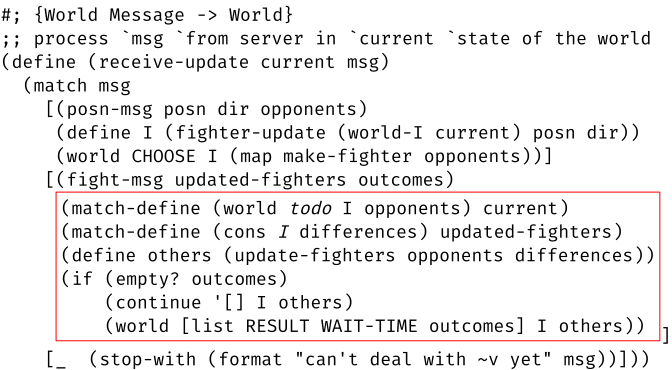
The ideas say “break up any large function” and turn it into a composition of several small functions, that is, a composite function. The performance cost is negligible. And the gains in comprehensibility are large. Creating a composite function means recognizing blocks of code in an existing function as a separate, meaningful task. The second step is to move this code into a function by itself, to give this function a name that describes the task properly, and to replace the code with a call to this function.
Figure 21 displays a somewhat longish function. It certainly exceeds the already-mentioned six lines per method metric of Squeak. The key is to recognize the lack of balance in the three branches of the (match) conditional. Specifically, the second, boxed branch consists of six lines while the first one requires two and the last on is just a function call. These counts alone suggest that the method is a mix of atomic computation and a composition of helper functions.
The next step calls for factoring out pieces of code as separate functions or methods. This means identifying all those variables that are defined in the existing function and needed in the code block. These variables become the arguments and parameters, respectively, to the factored-out functions. When a developer considers factoring out one branch of a conditional, it is often best to factor out all other branches that consist of more than a line.
#; {World Message -> World}
;; process `msg` from server in `current` state of the world
(define (receive-update current msg)
(match msg
[(posn-msg posn dir opponents)
(deal-with-positioning-msg current posn dir opponents)]
[(fight-msg updated-fighters outcomes)
(deal-with-fight-msg current updated-fighters outcomes)]
[_ (stop-with (format "can't deal with ~v yet" msg))]))
Figure 22: Breaking up the function in figure 21
In the running example, the existing function pattern-matches the received
msg against structs named posn-msg and fight-msg,
respectively. This matching defines several variables locally. Since the code in
the two branches also refers to current—
Figure 22 displays the result of this re-factoring step. The
re-factored variant consists of a conditional with three branches, each a singe
function call. Comparing the two variants should immediately clarify how the
re-factoring and the choice of function names helps a developer navigate this
code base. If, for example, a glitch is visible during the set-up phase of the
game—
The factored-out deal-with-posn-msg function is an example of an atomic function. Atomic because it use nothing by struct operations (e.g. world-I, fighter-update) and imported functions (e.g. map).
16.3 A Short Note on Conditionals and Loops
After identifier references, conditionals and loops are the most frequently used forms in methods. They deserve some basic care.
A conditional identifies distinct cases of computation, and it sets up distinct blocks of code for each case. Distinguishing cases helps developers focus. By subjecting a statement to a condition, a developer can focus on just this special one form of data and ignore all others.
all conditions and branches should use a uniform style;
all cases of a situation are covered by a single conditional; and
all branches should be of roughly the same size and complexity; or always place the shorter branches ahead of the longer ones.
Take a second look at the code in figure 21, specifically at the conditional in the function body. It distinguishes three input cases for msg. The conditions are formulated in a uniform style. While the first two pattern-match and deconstruct a struct into its pieces, clearly distinguishing two cases, the last one is a catch-all clause. By contrast, and as the preceding section points out, the branches themselves violate the first and third guideline with the second one standing out by size alone. The second branch also contains sophisticated pattern-matching definitions, (simple) function calls, and a nested conditional (distinguishing two different result situations). The refactoring of the preceding section creates a function whose conditional satisfies the guidelines.
/* @param `state` the current game state |
* @param `action` the player's chosen action |
* @return |
* is `target` reachable after applying `action` to `state` |
* @effect may modify `state` |
*/ |
|
private static boolean reachable(State state, Action action) { |
Position target = action.getTarget(); |
state.applyAction(action); |
if (!state.canActivePlayerReachTile(target)) { |
state.undoAction(action); |
return false; |
}; |
return true; |
} |
private static boolean reachable(State state, Action action) { |
Position target = action.getTarget(); |
state.applyAction(action); |
if (state.canActivePlayerReachTile(target)) { |
return true; |
} else { |
state.undoAction(action); |
return false; |
}; |
} |
/* @param `dir` the desired direction of an action
* @param `ind` the row or column to be shifted
* @return whether `ind` is a valid index given `dir` */
private static validIndex(Direction dir, Index ind) {
if (dir.isVertical()) {
if (!state.getBoard().isMovableCol(ind)) {
return false;
}
} else if (!state.getBoard().isMovableRow(ind)) {
return false;
}
}
Exercise 12. Figure 23 displays a snippet from a rule-checking class for a game whose board comes with movable rows and columns. Does the conditional satisfy all guidelines? Why? If so, explain. Why not? If not, rewrite the method. Work with a partner.
A for loop combines a conditional with a function. In its most basic form,
the purpose of a for loop is to traverse some data structure and apply the
body to each component of the data structure. In some languages, the enumeration
of elements is an explicit process, and in this case, a termination condition is
stated explicitly. As for the function part, nobody ever speaks of a loop body
as a function, but that’s what it is. A while loop is similar to a
for loop. It differs in two ways. First, the components of a data structure
are computed explicitly, step by step. Second, the generation of
components—
The key is to write clear conditions (if needed) and to keep the loop body comprehensible. Like for an ordinary function, the loop body should not exceed an easily comprehensible size, about the same size as a function. Conversely, if the loop body gets too large, identify atomic tasks and factor them out into functions; if necessary, turn the entire loop body into a function with a suggestive name.
Consider the following two code snippets. Read the one on the left first:
void echo(String fn) {
try {
Reader br = open(fn);
int iIn;
while ((iIn = br.read()) != -1) {
char cIn = (char) iIn;
System.out.print(cIn);
}
}
catch ...
}
void echo(String fn) {
try {
Reader br = open(fn);
while (br.ready()) {
echoChar(br);
}
}
catch ...
}
Now look at the code on the right. It uses a ready method to bring across that the termination condition is about finding the end of the readable input. The loop body is just a function call to a well-named function: echoChar. Every code reader can immediately discern what this loop body computes.
17 Inspecting Code, the Basics
A code inspection calls for the discovery of three kinds of problems: coding flaws, errors, and design mistakes.
Coding flaws make the code difficult to understand. These flaws are common, easily spotted, and equally easily corrected. The most basic coding flaws violate the basic suggestions of the preceding section. Others conflict with specific coding rules that a team has adopted but aren’t enforced with linting tools.
Errors make code inconsistent with expected behavior. Most pieces of code come with informal specifications. The panelists must understand these specifications and what the reviewed functionality is to accomplish, though they may not see how to realize it. When panelists discover discrepancies between the code and the specification, everyone involved must rejoice; it is a bug not deployed. One way to search for errors is to inspect the unit tests for a piece of functionality. Panelists may notice that the tests don’t cover some aspects of the desired functionality; they may then propose that a test case be added and pay close attention to the uncovered aspects.
Design mistakes may make the code useless. In some cases, developers
choose a code organization—
Panelists can discover design flaws at two stages: during an inspection of the
specification architecture or during an inspection of the code itself. For the
first kind, review the discussion in Inspecting Component Designs; it illustrates how
panelists can question a relationship between different system components,
specifically the choice of one communication protocol over another between two
components. This early discovery avoids the creation of code with serious design
flaws, but not all design flaws manifest themselves at this stage. For the
second kind, panelists must continuously question whether they are agreeing to a
presenter’s explanations of the code too easily. In many cases, they must insist
that the present explicate implicit assumptions about the context of the
presented code—
Using the guidelines from the previous section, an inspection targeting coding flaws is straightforward. Simple instances of the other two are also quite easy to spot.
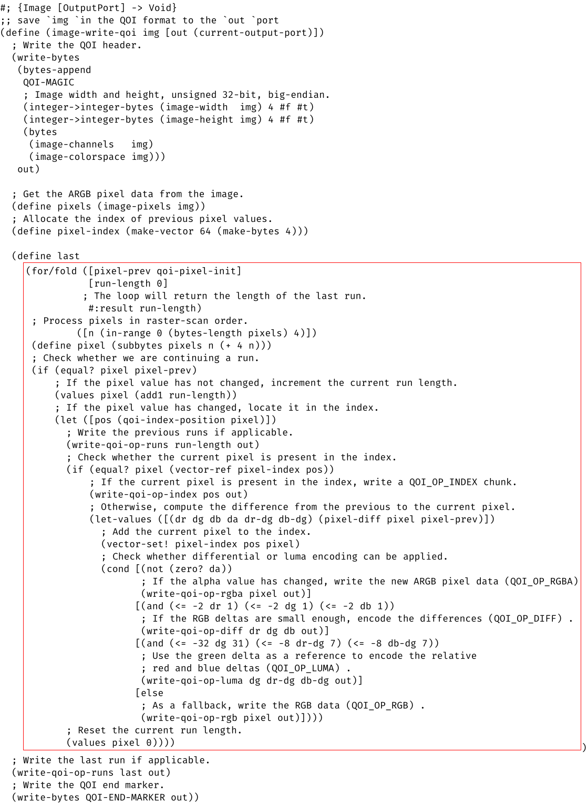
17.1 Inspecting Code for Coding Flaws
Imagine yourself as a panelist that is about to review the code in figure 24. This function is an extract from a QOI library. For our purposes, it does not matter what QOI is about other than that the figure displays a single function from this library. The question is where and how this code violates the basic guidelines from the preceding section. Stop! List those violations before reading on. Thanks to Guillaume Savanton who wrote most of this code originally and who gave permission to use it for this illustration here. The imaginary dialog is loosely based on a conversation between the creator and the author.
Here (figure 24) is the function that writes out an image to a file or a device. | This function does not fit on your laptop screen. How long is it? |
It is 60 lines long. But note that it is extensively commented. A reader should have no problems with it. | Let’s focus on its length for now and return to the comments later. How can you split up the function? |
But, note how the panelists also veer from the prescription for inspections. Instead of focusing on finding flaws, the second question implies suggestions of how to improve the presented code.
Is it acceptable to weave in suggestions?
Generally speaking, it is not the task of a code inspection to make suggestions on how to fix problems. The intent of the review is to understand how the function accomplishes its purpose and to uncover problems. Keep in mind that the developer of the code has studied the problem in gory detail and has figured out how to tackle it with code. Once a problem is pointed out, the developer may come up with several solutions and, if needed, can ask for advice if a trade-off is to be made.
Once exception to this rule concerns “developers in training.” In the specific situation when a mentor reviews code with someone who is considered “in training,” weaving in potential fixes is acceptable. But even then it is best to extract the fixes from the mentored person rather than stating them directly. This furthers the learning process.
... | Does the function perform distinct tasks, tasks that could be factored out? Can you just walk us through the various steps that this function takes to write the image? |
The first expression writes the header of the file. It could be factored out as a function. | If you name it write-header, it is also clear what it computes. |
Noted. And yes, a good function name might make the comment superfluous. | Also, the expression is deeply nested. Perhaps it’s best to split it into named components while you create the separate function. |
Noted. | Does this mean the big code block that initializes last is writing out the body of the image? |
Yes, the expression is somewhat large and performs side effects. | Can you identify the tasks that this initialization expression performs? |
The loop goes over the body of the image and writes it out in chunks. | But it also seems to return something. |
Yes, it returns how large the last sequence of bytes is that must be written out. | Can’t this loop go into another function, one that writes the body? |
No, it isn’t just the loop. As the comments above suggest, the pixel-index vector is also needed for writing out the body. | Oh, okay. |
The panelist once again made a suggestion—
Yes, the expression is somewhat large. | Can you identify the tasks that this initialization expression performs? |
The loop goes over the body of the image and writes it out in chunks. | What does it return? |
It returns the number of bytes that must be still written out. | The comment about #:return says so. Could it be replaced with a better name for this variable? |
True, something like length-of-last-run would make this comment completely superfluous. | Yes. And as a matter of fact, almost every line of code comes with a comment. Isn’t that too much? |
The comments are left over from when we worked out the function. | Go over them and see how many of them are still necessary. |
Will do. Any other criticism? | Just a question. Now we understand that the function writes a file header and a body. Does it also write a “footer” or whatever it might be called? |
17.2 A Code Inspection Memo
The product of a code inspection is a memo that details the criticism that come
up and aren’t immediately resolved. It is not the task of the presenter
to take notes, unless given time to do so. Indeed, during a code inspection, the
Taking Notes presenter should focus on just three
points: explaining the code; understanding the questions and criticism;
answering those properly or pushing back when panelists’ criticism are addressed
in the code—
To: Guillaume S.
From: Matthias F.
Date: 31 Feb. 1981
Subject: your img-write-qoi function
An inspection of the QOI library revealed the following problems:
1. The function is too long.
SUGGESTION It might be possible to break it up into three
functions: one for the file header, one for the body of
the image, and one for the remaining bytes.
2. The initialization expression for the variable last is too long.
SUGGESTION Turn the loop into a function that returns how many
bytes of remain to be written at the end.
3. The code comes with too many comments, many of which add
nothing to the code. The first one is in the loop header:
(for/fold ([pixel-prev qoi-pixel-init]
[run-length 0]
; The loop will return the length of the last run.
#:result run-length)
...)
This comment merely repeats the #:result clause and adds nothing.
the name(s) of the presenter(s),
the names and roles of the panelists,
date and time,
a link (URI) to the presented code, and
a list of the problems discovered during the inspection:
a description of a problem must enable the presenter(s) to reconstruct it;
the description must be in terms of the code, not in terms of what the presenters said;
if a suggestion comes up and the presenter accepts it, the description may include it but should clearly label it as such.
#; {Image [OutputPort] -> Void}
;; save `img` in the QOI format to the `out` port
(define (image-write-qoi img [out (current-output-port)])
(write-qoi-head img out)
(define last-run-length (write-qoi-body img out))
(write-qoi-op-runs last-run-length out)
(write-bytes QOI-END-MARKER out))
#; {Image OutputPort -> Void}
(define (write-qoi-head img out)
(define width (integer->integer-bytes (image-width img) 4 #f #t))
(define height (integer->integer-bytes (image-height img) 4 #f #t))
(define header (bytes (image-channels img) (image-colorspace img)))
(write-bytes (bytes-append QOI-MAGIC width height header) out))
#; {Image OutputPort -> Void}
(define (write-qoi-body img out)
(define pixels (image-pixels img))
(define LENGTH (bytes-length pixels))
(define INDEX (make-vector 64 (make-bytes 4)))
;; Process pixels in raster-scan order:
(for/fold ([prev qoi-pixel-init] [run-length 0] #:result run-length) ([n (in-range 0 LENGTH 4)])
(define pixel (subbytes pixels n (+ 4 n)))
(cond
[(equal? pixel prev)
(values pixel (add1 run-length))]
[else
(write-qoi-op-runs run-length out)
(write-piece pixel INDEX prev run-length out)
(values pixel 0)])))
#; {Bytes [Vector Bytes] N OutputPort -> Void}
(define (write-piece pixel INDEX prev out)
[define pos (qoi-index-position pixel)]
(cond
[(equal? pixel (vector-ref INDEX pos))
(write-qoi-op-index pos out)]
[else
(define-values (dr dg db da dr-dg db-dg) (pixel-diff pixel prev))
(vector-set! INDEX pos pixel)
(cond [(not (zero? da))
(write-qoi-op-rgba pixel out)]
[(and (<= -2 dr 1) (<= -2 dg 1) (<= -2 db 1))
(write-qoi-op-diff dr dg db out)]
[(and (<= -32 dg 31) (<= -8 dr-dg 7) (<= -8 db-dg 7))
(write-qoi-op-luma dg dr-dg db-dg out)]
[else (write-qoi-op-rgb pixel out)])]))
17.3 Reacting to a Code Inspection
Figure 26 shows how the presenter(s) could react to the criticisms
from the code walk. The main function—
write-qoi-head, which writes the file header;
write-qoi-body, which deals with most of the body; and
write-bytes, a generic function that marks the end of the file.
Consider write-qoi-head, the function that writes the file header. The corresponding expression in the original version of image-write-qoi is deeply nested. This new auxiliary function consists of three variable definitions and one expression: write-bytes. The names of the variables makes it abundantly clear which role each piece plays and which order the pieces are computed. No comments are needed to explain any of this computation.
Similarly, write-qoi-body consists of three variable definitions and the main shape of the large loop in the original image-qoi-write function. It contains one comment, concerning the order in which the loop traverses the image’s bytes. The author clearly considered this remark critical and its content difficult to discern at one glance from the loop’s body. Also note how the author split out the non-trivial, atomic step of writing pixels to the file. Doing so keeps both auxiliary functions to a reasonable size and creates comprehensible units of code.
17.4 Inspecting Code for Errors and Test Coverage Problems
Spotting errors in code is challenging. To claim an error, a panelist must fully
understand the specification—
Balancing the two aspects is a challenge for every panelist. Some highly experienced developers may be able to accomplish it in some situations, perhaps because it resembles problems they have encountered before. But, for the sake of keeping the conversation productive and for the sake of egoless programming, it might be best for both to simply ask standard questions about test coverage. If the tests cover the imagined inputs or situation, there might not be a problem; otherwise, the presenter and the panelists may wish to work through such the imagined scenario together.
Let’s make this concrete. Figure 27 displays a class fragment for a game called “Three in a Row.” Two players place tokens on a square board of size n x n. The first player to connect three tokens along a row, a column, or a diagonal wins.
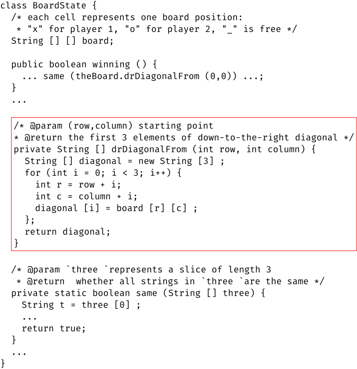
As the data-representation comment in BoardState says, the developer has chosen to represent the state of the game board with a String array. Each one-character String in this array represents an open slot or a slot taken by one of the players. To decide whether it is a winning board state, the developer has added methods for extracting rows, columns, and diagonals, each represented with a String array.
The most interesting methods are those that extract rows, columns, and diagonals. | Okay, why don’t we look at the extraction of diagonals to get started. |
It’s best to highlight the method. (See boxed portion of figure 27.) | Well, the "d" and "r" part of the name are puzzling at first, but the purpose statement clarifies it. |
In order to extract the diagonal, the method sets up a loop that proceeds from the given board position, one step at a time. | Is diagonal the loop accumulator? |
As a matter of fact, yes. If the loop has taken yea-many steps, it contains that many Strings. | ... |
So far, so good. The presenter and the panelist discuss how the code computes
the diagonal, avoiding all mention of “how you, the presenter” would do it.
The first interaction also illustrates how a panelist—
... | That makes sense. But could you explain how the for loop iterates through the two-dimensional board |
Sure. The loop takes three steps, with i set to 0, 1, or 2. | Doesn’t the indexing into board with 1 or 2 raise an exception if row and column represent the corner of the board? |
... | That makes sense. But could you explain how the for loop iterates through the two-dimensional board |
Sure. The loop takes three steps, with i set to 0, 1, or 2. | Could you show us a test case where the drDiagonalFrom is called with a starting position that is only one step from the board’s border? |
I don’t think we have such a test. As a matter of fact, I don’t think we have any tests where the loop starts just one step away the edge of the board. | So is this a problem? |
Yes, it is. We simply didn’t think that a player would play it that close to the edge. | I don’t think we should make such an assumption. |
Correct. We don’t want this code to raise an out-of-bounds exception. | ... |
17.5 Pushing Back During a Code Inspection
... | That makes sense. But could you explain how the for loop iterates through the two-dimensional board |
Sure. The loop takes three steps, with i set to 0, 1, or 2. | Could you show us a test case where the drDiagonalFrom is called with a starting position that is only one step from the board’s border? |
We don’t need such a test. The winning method calls only if the diagonal exists. | Oh, that’s surprising. You may wish to expand the purpose statement of the method to explain this pre-condition. |
That’s a good idea. Someone might add a call to drDiagonalFrom in the future without realizing that it relies on this pre-conditon. | From this angle, it might even better to eliminate the code that establishes the pre-condition and to fold it into the method. |
Yes! | Before we move on, let’s revisit this check in winning. |
Several aspects of this exchange are worth nothing. First, a presenter should
not just listen to criticism and accept it. It is perfectly reasonable to reject
a criticism. Second, in this case, the calling context establishes a critical
pre-condition, which implies the next two points. Third, the presenter should
explain this class in a top-down fashion, starting from the public entry
points, and ask the panelists to pay attention to this point when the definition
of winning is visible. Fourth, the panelists may not rely on the word of
the presenter alone here. They must re-direct the code inspection to the
winning method so that they can convince themselves that the pre-condition
is properly establised—
class Server:
"""
a server for signing up remote players for a Train game
"""
host: str = "0.0.0.0"
server_socket: socket.socket
port: int
index: int = 0
proxies: \underline{\texttt{Set[AbstractPlayer]}} = set()
def __init__(self, port: int):
self.port = port
def sign_up_step():
"""
EFFECT tracks signed-up player-clients and their age
"""
...
self.index = self.index + 1
self._handle_1_client(client_socket, self.index)
...
... Referee(\underline{self.sort_proxies()}).run() ...
...
def _handle_1_client(self, client: socket.socket, i: int):
"""
EFFECT adds a single player-client to `proxies`
"""
...
with Timeout(CLIENT_NAME_WAIT, ...):
player_name = client.recv(RECV_SIZE).decode("utf-8")
proxy_player = ProxyPlayer(player_name, client, i)
\underline{self.proxies.add(proxy_player)}
...
17.6 Inspecting Code for Design Mistakes
General speaking, design mistakes are the most difficult-to-spot, and yet, they may have the worst impact on all aspects of the overall product. Their source varies but here are some common one: the choice of data representation; the division into separate tasks or the intermediate data structure; a mismatch between the data representation and the processing functions; premature and probably useless optimizations; and many more. The effects, as mentioned at the beginning of this section, are equally varied: opaque code; bad performance; complex logical errors; and more.
The (board game) server waits for sign-ups over TCP ... for a minimum number (here, 4) of remote clients to connect. ... If a sufficient number of players sign up by the end of the waiting period, the server hands over the players to a referee, sorted in ascending order of their “sign-up age.” ...
Here (figure 28) is the server class. Its state represents its external connectivity and the players that have signed up since the call to sign_up_step. | Most of the fields make sense. Though it’s not clear why there is an index field. |
The index represents the reverse age of the connected players. | It might be best if we check how it is used. |
Let’s look at sign_up_step. It is the only public method. | Then it’s the right starting point. |
It waits for a connection, increments index, and calls _handle_1_client to deal with a single connection. | What happens if this call fails to deal complete the sign-up step? Isn’t index “wrong” in this case? |
“Wrong” is the wrong word, because index does not have to be the precise rank in the sig-up order. | Is it enough if it increases over time? |
Yes. Its value is stored with the proxy player so that sign_up_step can sort the proxies before it hands them to the referee. | This may make sense. Let’s check _handle_1_client next. |
The code inspection starts well, with a quick look at the information the class represents and a directive from the panelists at what to look next. By the fourth interaction, the panelists seem confused about the role of index and its value. While the presenter can temporarily diffuse the implied challenge, the panelists once again direct the presentation, and this time it is the crucial spot.
_handle_1_client waits for a string to appear on the new connection. Once it has the string it can create a proxy player. | What does the proxy player do? It seems to need index in addition to the connection. |
A proxy player has the same interface as a local AI player. But, instead of making game decisions locally, it forwards the data via its connection. | That makes sense. Why does it need index? And why is it named i in this method? |
As I said, the index is stored in the proxy so that sign_up_step can sort the set of players before it hands them over to the referee. | Is there any other use of proxies in the class? |
No, there are just those two: one in _handle_1_client for adding a proxy. | And one in sign_up_step to sort? |
Indeed. | This sounds like a set is the wrong choice of data representation. |
The extensive integration test suite passes. | No doubt, but a set is an unordered data structure, and the specification calls for an ordered one. |
Yes, that’s true. Perhaps it would be better to keep the proxy players in a list and just add new players to the front. | Doing so would eliminate index and the sorting step, though a data-interpretation comment about the ordering would still be good for future readers. |
The presenter and panelists jointly figure out a design problem. Even though the code is correct, the use of set signals to a reader that the proxies are collected in an unordered manner. A future reader of this code would have to reconstruct the relationship between index and sort_proxies to understand what is going on. By using an ordered data structure such as a list to represent the information about the connections the code signals up front that an ordering is needed. The use of a list also directly echoes the specification, which may also help future readers.
This simple design mistake causes only minor problems. It misdirects a reader, and it consumes a bit of extra time to perform the sorting step. It is easy to imagine though that such small mistakes pile up and cost maintainers extra time to wrap their head around the code. Similarly, a lot of small performance losses add up to a large one. It is therefore good to catch and eliminate even such small mistakes as early as possible.
Exercise 13. Write a code inspection memo like the one in figure 25 for this code inspection.
18 Systematic Design
If functions and methods are the most fundamental building blocks, their development deserve special care. While “programming a function” might have served as a phrase in the early days of computing, here we use “designing a function” instead to bring across the importance of acting carefully and systematically at this level. The word “programming” encompasses just too many sloppy ways of creating code.
Data represents the information that enters or exits the software system. Data also represents intermediate results, which flow from one component in the system to others.
18.1 Developing Data Representations for Information
Software systems interact with their context by absorbing and injecting
information. This context comes with many forms of information that the system
must consume: names, distances, temperatures, pressure, touch, and so on. A
device turns this information into plain bytes inside a computer, e.g., a keyboard,
a mouse, a thermometer, a touch screen, and so on. These devices deliver sequences
of bytes, and the software system reads these bytes. The act of reading turns
information-as-bytes into data—
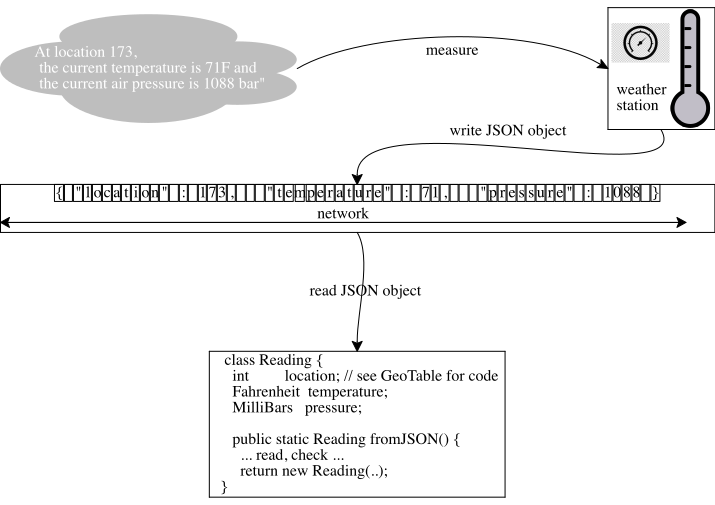
A concrete example should help. Take a look at figure 29. It
depicts a software system—
In most cases, developer may ignore the byte-level layer and may instead focus on information and data. Turning one into the other is thought of as a direct, instantaneous step for the purpose of developing a data representation. In the context of the running example, the developer has chosen a class with three fields as a data representation (bottom) for the information (top right). What happens in between does not matter. Concretely, the fromJSON function in the Readings class translates this information into the internal data representation, and the implementation is usually just a use of some library plus an optional check that the resulting data meets some conditions. The important choice is the Reading class, which for this simple example, makes objects with three relevant attributes.
18.1.1 Information that is Considered Atomic
information
data
single names
strings, such as "Bob"
distances
numbers, such as 1.5
keystrokes
chars, such as #\a
switch positions
Booleans, or
symbolic values, such as "on", "off"
For complex information—
18.1.2 Structured Information: Don’t Use Strings to Represent It
"Shriram Fisler" |
"Shriram K. Fisler" |
"Shriram K. Fisler, Jr." |
"Shriram K. Fisler, Esq." |
"Dr. Shriram K. Fisler, Esq." |
"Prof. Dr. Shriram K. Fisler, Esq." |
18.1.3 Structured Information
Structured information comes in many forms, but all of them share the principle of relating pieces of information to each other. Indeed, this is the definition of the word “structured” in the phrase “structured information.”
(struct person |
[{titles : [List String]} |
{first : String} |
{middle : Char} |
{last : String} |
{suffix : [List String]}]) |
|
(define example |
(person [list "Prof." "Dr."] "Shriram" #\textbackslash{K} "Fisler" '[])) |
information
data representation
names of people,
a struct of strings
amounts of money
a struct, an exact rational
points and directions
vectors, complex numbers
a handful of game money tokens
a set of ...
sequence of temperatures
a list, sequential access
sequence of temperatures
an array, for random access
sequences of names of people
a list of structs
hierarchically arranged decisions
a tree
the ancestors of a person
a tree
people, their social relationships
a graph
Exercise 14. Pick one case and figure out the rationale for the recommendation on the right-hand side of the table.
The above table mentions lists, trees, graphs, and so on. In many cases, these
forms of data are ideas that developers inject into the conversation about
information. The “graph of people” does not exist in the real world;
individual pieces of information make up the collection of these links. In the
world of data—
18.1.4 From Information to Data Representations, And Back
Stepping back, the structure of information tends to guide the design of data
representations. Basic information maps to atomic data. For structured
information, contemporary languages come with an extensive collection of
data-structure libraries. These libraries many representation choices
straightforward. If a developer must represent a sequence of information—
In case the structure of the information does not easily map to a supported data collection, it remains imperative to proceed systematically with the development of a data representation. A systematic development tends to be reflected in the resulting choices and code elements. It is thus likely to convey the intention of the creator.
The Purpose Statement Once a developer understands the pieces of
information that need representation, there are two key preparation steps to
take. First, the developer must identify the relationships among the pieces of
information. Second, the developer must articulate purpose
statements—
Consider the following example. Suppose we wish to construct a software system
that allows users to explore the biological ancestor relationships among people. Perhaps
they want to make sure that a newborn gets the name of some ancestor—
// ... represent naming information for a single person |
struct Person [first : String, last : String] |
|
const jon : Person = {first = "Jon", second = "Parson"} |
const ada : Person = {first = "Ada", second = "Parson"} |
const bob : Person = {first = "Bob", second = "Parson"} |
how every instance of information is represented as data.
how pieces of data are interpreted in the realm of information.
Note The word “every” is missing from the above guideline. Formulating a data representation determines a set of values in the chosen programming language. Due to the nature of contemporary programming languages, it is often extremely difficult or even impossible to describe this set in such a way that every piece of data has an interpretation.
data representation
possible interpretation(s)
int distance
in m, cm, feet, yards, etc.
List<Person>
an alphabetical list of members
Tree<Person>
a tree of ancestors
struct Name {
String first;
String mi;
String last; }
does this choice need one?
struct Coordinate { |
int x; // the distance from the left margin |
int y; // the distance from the top (in pixels) |
} |
Exercise 15. For each example in the table, explain why an interpretation is needed and/or make up some example data to illustrate the interpretation. How does the data definition of Coordinate differ from the Cartesian coordinates you know from middle school? Does this data defiintion really need the interpretations of the two fields?
In summary, developing a data representation calls for two comments: (1) one that explains how information is represented as data and (2) another one that explains how a piece of data is interpreted as information. A data representation must come with some examples to illustrate these comments.
Representing Relationships While a named person is arguably a concrete, single piece of information, some information has no such concrete counterpart. Recall that the illustrative data representation in this subsection is only for a part of the desired information world. The scenario calls for the representation of ancestor relationships. People tend to refer to the ancestor tree, but there is no such tree in the domain of the scenario; it is a figment of our analysis.
// ... represent ancestor relationships among Persons |
type Tree = known | Unknown |
|
struct Known [person : Person, mother : Tree, father : Tree] |
struct Unknown[] |
|
const u : Unknown = {} |
const f : Known = {person = jon, mother = u, father = u} |
const m : Known = {person = ada, mother = u, father =u} |
const c : Known = {person = bob, mother = m, father =f} |
|
// `c` is the ancestor tree of the child of `m` & `f` |
// neither `m` nor `f` have known ancestors |
18.1.5 From Information to Classes via Doodling
Since the proper development of data representations lays the foundation for the systematic design of software, let us take a close look. We do so in the context of class-based, objected-oriented programming, which still dominates many parts of the software field. The following list of scenarios is not exhaustive but covers many cases. It simultaneously articulates some basic principles and suggests a sketching notation for “doodling” data representations (on a napkin or a black board). You may have encountered both in a prior course on programming , so consider this list a concise summary.
Combining Several Simple Pieces into One Bundling several pieces of information into one piece of data is the most basic choice of a data representation. Doing so signals to the reader of this code that these pieces belong together and that functions and methods should deal with them together.
The preceding subsection introduces such an example: the first and last name of a person always belong together. Other examples are the coordinates of a point in space; an amount of money and its denomination; or the measurements of a single piece of furniture.
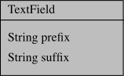
TextField tf = new TextField("hello ", "world"); |
// if the cursor is a vertical bar, |
// `tf` represents "hello |world" |
Combining Simple and Complex Pieces into One As mentioned, the structure of information should drive the development of a data representation. if a piece of information refers to other forms of information, a class-based representation should consist of classes that refer to each other.
flattened
nested
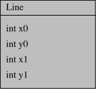
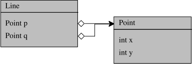
legend:
the diamond-labeled field is represented
by an instance of the class at the arrow head
The explanation in geometry books clearly identifies two distinct pieces of information: lines vs points. Given this context, it is clear that a nested representation mirrors these textbook explanations. By contrast, a flattened representation imposes a small, but non-trivial cognitive load on the reader, namely, to realize that (x0,y0) determines one point and (x1,y1) the other. Since the domain of geometry also comes with distinct operations on points and lines, which occasionally depend on each other, a separate representation has the advantage of offering natural places for these operations.
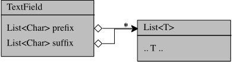
legend:
each diamond-labeled fields is represented
by an instance of the container class at the arrow head
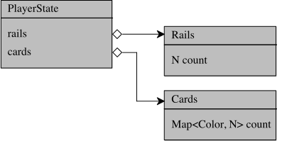
Actions are Information, Too Functional programmers understand that actions are information and occasionally deserve a direct representation. Consider the somewhat abstract and mathematical example of infinite sets, which a logician may represent with a characteristic function from elements to Booleans; if the result is true, the element is in the set and otherwise not.
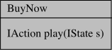
Viewing Distinct Pieces Uniformly When a form of information comes in
distinct flavors, the rest of the program should use all pieces uniformly. In a
class-based language that supports interfaces, we can think of this case a
type—
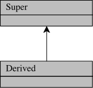
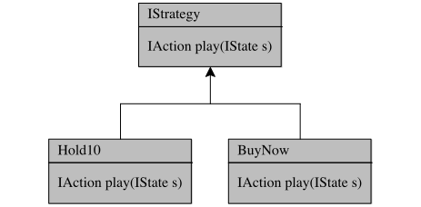
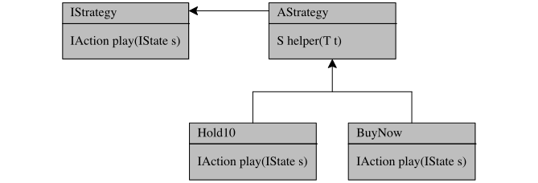
Arbitrarily Large Pieces of Information The final form of information to be represented is the most interesting one: when there is no limit on the size of an individual piece. While this idea may surprise you at first, it is actually the case that all interesting computations involve such forms of unlimited information. Keep in mind that “no limit” does not mean “infinite.”
Simple examples from the real world are sequences of pieces of information: a grocery receipt; tables of stock prices; listings of home for sales; and so on. Most such listings are of variable length, and there is no predetermined limit on the length of such sequences. You never know how many pop tarts a father has to buy for a growing family. Companies come and go; few companies from 100 years ago are still listed on the stock market yet many more companies are public now. Similarly, homes are added to sales listings and removed all the time.
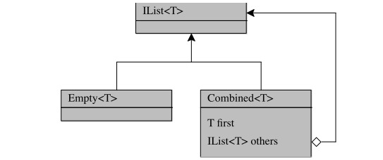
While diagrams with cycles look complex at first glance, a second take tends to The axioms of Pressburger arithmetic generate a decidable theory. Pressburger expressions are common in code and therefore play a role in compiler optimizations. produce insights into what the data representation encodes. Consider the problem of representing arithmetic expressions, specifically expressions in what is dubbed Pressburger arithmetic. Roughly speaking, expressions in Pressburger arithmetic consists of variables, constants, and additions; practical extensions allow multiplication by constants. (Why?)
4 + 5 * x + -1 * y
valid Pressburger arithmetic expression
4 + y * x + -1 * y
valid general (Peano) arithmetic expression
4 + 5 * x -1 + * y
ill-formed
If data enters software systems as a sequence of bytes, arithmetic expressions
are likely to be sent as sequences of characters—
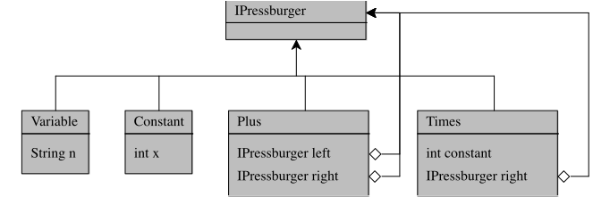
Exercise 16. Represent the valid Pressburger expression from above as a tree, using notation from a class-based language. Why is it impossible to represent the valid Peano expression? Sketch methods that (1) find the set of all Variables in such expressions; (2) replace variables with numbers; and (3) determine the value of such expressions, given a table that maps each Variable to a number.
18.1.6 Choosing from Several Alternatives
how easy it is to create an instance and how much this costs;
which operations are frequently used and should be inexpensive; and
which operations are rarely used and are acceptably slow and costly.
In many cases, answers to the above questions are discovered once developers implement the functionality and measure it. The chosen representation may miss an access capability. For example, the implementation may clarify that the rest of the program needs random access to pieces of a sequence but the chosen form of data allows only sequential access. No matter what, it is then time for a developer to backtrack and revise the choice of data representation. Once again, well stated representation and interpretation statements help the older version of the developer understand the younger version’s choices and make changes to it. Without these comments, modification may all too easily mess up unstated assumptions.
Recall the two data representations for a test-field editor’s state: one just uses two strings and the other two lists of characters. A developer is likely to observe that the implementation of cursor-based editing operations demands repeated access to individual characters. Indeed, these methods always access the last character of the prefix and the first of the suffix. Hence it is also the case that the prefix is best represented as the reverse of the sequence of visible characters.
// the prefix is the reverse of the visible chars |
List<Char> pre = ['o','w'] |
List<Char> suf = ['r','l','d'] |
TextField tf = new TextField(pre,suf) |
// if the cursor is a vertical bar, `tf` represents "wo|rld" |
Now compare this choice with the two alternative representations of geometric lines (). The “flattened” alternative represents lines with a single object that has four fields; the “nested” one follows geometry books and thus prescribes objects with two fields, each of which is another object. While the brief comparison of these two alternatives suggests the nested representation offers a good organization, coding to this data representation may reveal that accessing the x and y coordinates are the most frequently run operations. In this (extremely rare) case, a developer may wish to go with a flattened data representation of lines to avoid the indirect lookup. If so, this choice deserves a purpose statement that includes a rationale for this choice.
18.2 Developing Data Representations for Composition
While the structure of external information may dictate the representation for
the input to some function that interacts with the software system’s
context—
If possible, developers should still pay attention to the structure of input information. In many cases, a data representation of information that must explicate implied information is a good first example of an intermediate result. Recall the trees of ancestors and graphs of friendships that the preceding section mentions. Such pieces of data are often the result of a function that connects the software system to its environment. The challenge is to think through possible future uses of these forms of data so that internal functions benefit from the work of the first function.
Let’s make this idea concrete. Imagine a subway information system. Every
morning, the system is booted with information about the currently operating
stations and connections. Customers walk up to public information kiosks—
[..., Fenway, Kenmore, Hynes, Copley, |
Arlington, Berkeley, Park, ...] |
In this example, some form of graph representation is implied by the external
information—
18.3 Methods vs Functions
Once a developer has developed data representations, it is time to systematically design functionality, that is, functions and/or methods. Thus far, we have acted as if the two concepts are the same. Although they are closely related, they differ and the difference deserves an explanation.
Almost all programming languages support the definition of functions and methods. In a class-based, object-oriented language such as Java, a function is a static method. In a functional language such as Racket, a method is either a function stored in a struct or a function in a class, which is really just a notation for structs with special kinds of functions.
It usually takes several methods to implement a complete function. This idea is best illustrated with an example. Consider the case of processing lists. Let’s start with the task of adding 1 to every item on a list of numbers.
This example is contrived to keep this section short. Experienced developers would use libraries.
As pointed out in the preceding section, a list represents sequences of arbitrary size. As such, it needs a self-referential (recursive) description with two variants: empty and a combination of an existing list with another element. In Java, this arrangement is best represented with an interface and two implementing classes. See figure 30 for a “doodle” diagram.
To implement the functionality, a systematically proceeding designer would add a method to every “box” in this class diagram. The method in the interface Java currently prohibits systematic design, due to its failure to manage the stack properly. specifies the header of the functionality; that is, it represents the specification of the function. The other two methods are implementation pieces of the functionality. Meaning, the two methods implement the part of the functionality that is relevant to the data represented by the two classes, respectively: the empty list or the extended list.
interface IListN {
// add 1 to each int on `this`
IListN add1()
}
class EmptyN
implements IListN {
IListN add1() {
return this; }
}
class CombinedN
implements IListN {
int first;
IListN rest;
IListN add1() {
return new CombinedN(first + 1, rest.add1())
}
}
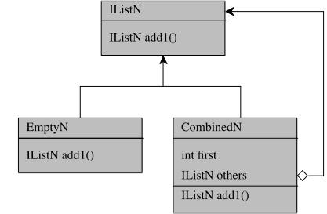
(struct empty-list []) |
(struct combined [first others]) |
;; A [List X] is one of: |
;; -- [empty-list] |
;; -- [combined X [List X]] |
|
#; {[List Number] -> [List Number]} |
;; add 1 to every element of `alist` |
(define (add1 alist) |
(match alist |
[(empty-list) (empty-list)] |
[(combined first rest) (combined (+ first 1) (add1 rest))])) |
Generally speaking, the design of a function is orthogonal to the design of the same piece of functionality with methods. A functional design uses a conditional to separate the various forms of input data from each other and to deal with each separately. By comparison, an object-oriented design places a method with each relevant form of data; the dynamic dispatch behind method calls realizes the conditional of the function design.
Note An object-oriented developer should use conditionals only to distinguish distinct result situations; in a functional language, such conditionals are nested within the dominant conditional in a function.
Unsurprisingly, each approach has different advantages and disadvantages. Roughly speaking, object-oriented program design facilitates the addition of new variants of data. A developer just adds yet another class that implements the specification interface including its methods. By contrast, functional design makes it easier to add another piece of functionality; it suffices to design a function. Most modern programming languages lead developers to favor one design over another but still accommodate the other one. Developers must keep these different style and their implications in mind ad they move from the data development stage to the functionality design stage.
Exercise 17. Use your favorite IDE to run the program from figure 30 in your preferred object-oriented programming language.
Design and add the product functionality, following the same object-oriented recipe used to produce the program in figure 30. The purpose of the functionality is to compute the product of all numbers.
Now add CombinedN2, another implementation of IListN. It is variant class that adds two ints to an existing list.
If you know the basics of a functional programming language, use it to solve the same problems.
18.4 Designing Functions, Systematically
The design of a piece of functionality starts with a problem statement. It should be save to assume that whoever will maintain the resulting code will also access to, and be able to read, the problem statement. The developer studies this problem statement and identifies distinct computational tasks, which yields a worklist. Each such task should eventually correspond to a function in the code base:
Simple tasks correspond to atomic functions. Complex tasks correspond to composite functions.
Designing any kind function demands discipline. Assuming a data representation
has been chosen, a developer should—
The Purpose Statement A developer must first articulate a clear and concise purpose of the functionality: what it computes. If it is possible to convey the purpose with a well-chosen function name, great; otherwise, a comment should supplement the definition and state the purpose explicitly.
The design should aim for an atomic function, if it is straightforward to articulate what the function computes from its inputs.
In case a systematic development still yields an overly large function, it might still be necessary to turn it into a composite function.
Otherwise, the developer should consider designing a composite function. This is especially true if there is a temptation to enumerate several tasks or at least if formulating the purpose is a struggle.
The Type Signature Next a function needs a type signature. As the start of this section explains, it is the first code-like idea that a developer understands before the function exists; revisit the diagram on this first page of the section. Without understanding what kind of data flows into and out of the function, it is simply impossible to describe the desired computation.
Typed languages enforce this. If the chosen language does not come with type
notation, the developer must still write down a type-like signature as a comment
and program to this type-like signature, not the function’s internals. The key
is that some other comments should define—
Working Through Behavioral Examples Using the purpose statement and the
signature, the developer can work through behavioral examples. The data
definition for the inputs should suggest representative inputs as well as corner
cases. Working through the examples yields an understanding of how the
function computes its results. Of course, working through examples also produces
unit tests—
If the goal is to design an atomic function, the developer should be able to imagine how every step of the work can be implemented with built-in language constructs, basic functions, or library functions. The function itself is also fair game, because recursive functions are atomic. By contrast, working through the examples for a composite function may appeal to existing functionality in the project, other functions on the worklist, or functions yet to be specified.
The Outline & Programming For many cases of input and/or output types, the type itself suggests how to organize the function. The analogy to writing is laying out all the ideas and organizing them into an outline.
The outline for an atomic function differs a lot from the one for a composite function. For an atomic function, the outline often involves distinguishing distinct forms of inputs or choosing an iteration form to match the processed data. For a composite function, outlining means dividing the given data among the helper functions identified in the previous steps and figuring out how to compose these functions.
At this point, defining the function is essentially filling in gaps between the ideas. Each piece of the outline delivers some intermediate result. The final task is to combine these intermediate results into the result that the function is supposed to compute.
Unit Tests The creation of a function is not finished until it has been equipped with unit tests. This may happen during step 2 or at the end, by translating worked examples into tests. If the language permits placing some unit tests with a function definition, a developer should do so to illustrate uses.
18.5 Atomic vs Composite: A Tiny Case Study
Let’s take another look at the already-mentioned game program in which a referee component interacts with player components. When it is a player component’s turn, the referee shares the current, publicly visible state of the game. In response, the player requests the execution of some action on this state on its behalf. Naturally, the referee must check the legality of this action according to the rules.
In a game such as Ticket to Ride, the game is played on a game map, which consists of connections between places. A player’s goal is to collect connections. To do so, the player trades assets in its possession for connections during a turn.
The referee hands players colored cards and rails, which they keep hidden from each other. With these assets, players may acquire and occupy available connections on a game map. If a connection of color c consists of n segments, a player must have n cards of color c and n rails to acquire and occupy the connection, respectively, during a single turn. Once a player has acquired and occupied a connection, other players cannot collect it.
#; {GameMap State Connection -> Boolean}
;; can the active player collect the given connection
(define (legal-action? gmap gs conn)
(cond
[(not (set-member? (available-connections gmap gs) conn))
#false]
[else
(define active (state-active-player gs))
(define seg# (connection-seg# conn))
(and
(<= seg# (pstate-cards active (connection-color conn)))
(<= seg# (pstate-rails active)))]))
|
#; {type GameMap = .. Connection ..} |
;; the map on which the game is played |
|
|
#; {type Connection = ..} |
;; ... and the connections it consists of |
|
|
#; {type State = [List PlayersState]} |
;; the referee's knowledge about the state of the game |
;; which is just the state of all players |
;; and the order in which they take turns |
|
(struct pstate [.. cards .. rails ..]) |
|
#; {type PlayersState = .. Cards .. Rails .. } |
;; a referee's knowledge about a single player |
As for the desired functionality, a developer can now say that the referee component must come with a function that determines whether a player may acquire and occupy a connection in the current state of the game, given a fixed game map. Since the problem description is relatively compact, a developer might wish to write an equally compact function definition. Figure 31 shows the result. The function computes the set of available connections; makes sure the requested connection is a member; and then evaluates the conditions about acquiring and occupying the connection.
Exercise 18. According to the preceding section, a reader must be able to connect each task in the problem statement with elements of the implemented functionality. In this spirit, circle in red the pieces of legal-action? in figure 31 that correspond to the act of acquiring the connection. Then circle in green the pieces relevant to occupying a connection.
one that ensures the player can acquire the connection with n cards of color c; and
another one that checks that the player can occupy the connection with n rails.
see to the availability of the desired connection;
check that a player can acquire and occupy the connection, which in turn implies the execution of the above two tasks.
#; {GameMap State Connection -> Boolean}
;; can the active player collect the given connection
(define (legal-action? gmap gs conn)
(and
(set-member? (available-connections gmap gs) conn)
(can-acquire-and-occupy? (state-active-player gs) conn)))
#; {PlayersState Connection -> Boolean}
(define (can-acquire-and-occupy? active conn)
(and (can-acquire? active conn)
(can-occupy? active conn)))
#; {PlayersState Connection -> Boolean}
(define (can-acquire? active conn)
(define color (connection-color conn))
(define needed (connection-seg# conn))
(define available (pstate-cards active color))
(<= needed available))
#; {PlayersState Connection -> Boolean}
(define (can-occupy? active conn)
(define needed (connection-seg# conn))
(define available (pstate-rails active))
(<= needed available))
The code of figure 32 presents this alternative. Each identified task is its own function. As a result, the functions completely align with the sentences in the rule description. Better still, each function can be understood and unit-tested in isolation, because its code is formulated in precisely the terms of the rule description.
Exercise 19. Re-do exercise 18 for figure 32. That is, circle the pieces of functionality corresponding to acquisition and occupation, respectively, in two different colors. Are they as easy to find in figure 31 as in figure 32?
Let’s step back to look at the big picture. Working through this example drives home a key insight. Although it is possible to formulate a short, seemingly atomic function in response to the problem statement, a bit of reflection reveals that this organization is not in one-to-one correspondence with the listed tasks. Even if splitting up the function means adding a few extra lines of code, it looks like a socially response action.
Exercise 20. Let’s change the rule. A player may occupy a connection of
n segments only if it has 2 * n rails in its possession.—
18.6 Designing Methods, Systematically
The design process for a method differs from the one for functions just a bit. Since both realize a piece of functionality on data representations, a large How to Design Classes overlap should not surprise. Conversely, the wording “on data representations” should suggest where the differences come from.
if some kind of information is represented with a single class, this statement is obvious.
if information requires a class C that contains objects of another class D, then a method for functionality f in C delegates to a method in D for those parts of f that involve D.
if some kind of information is a collection of disjoint sets of information, the interconnected classes represent the information as a union type. The interface is the union type itself, and all implementing classes are the variants. A piece of functionality for such information is realized with an abstract method in the interface and concrete, specialized methods in the variants.
for information whose size is unbounded, the data representation is a union type with self-references, such as those in figure 30.
the design of methods follows the arrows in a class diagram.
Given this setup, the design of methods should follow the same five essential steps spelled out in Designing Functions, Systematically: (1) understanding and formulating the purpose; (2) adding a type signature; (3) working through examples; (4) making an outline and filling its gaps; and (5) running the unit tests that come from the third step.
The fourth step differs a bit due to the mechanics of object-oriented languages. Recall from Methods vs Functions that these languages eliminate the need for conditionals that distinguish the variants of a union representation. The dynamic dispatch of method calls automatically directs a computation to the proper method. Or as stated in the referenced section, it takes several methods to realize a single function. Hence outlining a piece of functionality with methods means outlining several methods when a union type with an interface is involved.
18.6.1 Favor Functions, Favor Immutability
The title of this section is a slogan, due to Josh Bloch, the designer of Java’s API. Many years of experience with this API led Bloch to critique his own design as too imperative (stateful) and to propose this slogan in his book on programming effectively in Java.
A slogan like this one does not surprise people who know the history of
object-oriented languages. Alan Kay, the architect of Smalltalk—
In other words, the idea of reducing the use of assignment statements to fields and even local variables goes back to the very beginning of programming language design. To be clear, the slogan does not say “never use assignment statement.” It merely tells developers to think twice before they use it.
immutable objects and functional methods
positives
negatives
unit testing
algorithmic efficiency
direct semantics
programming patterns
Unit testing has become the most important tool for developers to confirm that methods work properly. Over the past couple of decades, the mechanism has proven its value so clearly that some companies and some teams demand at least one unit test for each and every method in a code base. Setting up a unit test for a functional method of an immutable object is straightforward: apply the method to input values and compare the results to expected output values. By contrast, testing an imperative method properly takes three steps: (1) setting up a context; (2) apply the method, checking its outcome, and making sure it doesn’t accidentally mutate fields whose value should remain the same; and (3) tearing down the context. It is easy to see why developers should prefer functional methods.
While ordinary English usage of “semantics” has a negative connotation, (programming) language researchers use the word to talk about the precise meaning of phrases. In this sense, direct semantics means that developers can understand the method’s functionality in isolation and, essentially, as an application of middle-school pre-algebra. Practically put, a developer can comprehend some method M based on some basic knowledge about the fields, plus the methods that M calls.
Always programming with immutable objects may reduce the algorithmic efficient of a method. Concretely, a functional method may run logarithmicly slower than an equivalent imperative method (measured according to the size of the input). The good news is that logarithmic factors are usually discounted by algorithm researchers. But developers must nevertheless be aware of this potential problem.
Finally, using immutable objects and functional methods pervasively tends to force programmers to use some boilerplate patterns. Roughly speaking, code may exhibit patterns such as the repeated decomposition of structured data and re-composition with one new piece on place. Or, functional methods may have to return an object when equivalent imperative, stateful methods return a base value. When such pattern appear frequently, developers should reconsider the use of immutable objects.
Let us briefly return to the automated player components mentioned several times in this book. As mentioned, such a component typically employs strategies to make decisions when it is granted a turn. These strategies use the current public game state as the basis for these decisions. Every game player knows that “decision” really means weighing options, comparing (at least) two different game states after applying two distinct actions to the current one.
if the game state is mutable, an turn action changes the state. Thus exploring several different alternative actions means (1) applying each action, (2) assessing the value of the state, (3) undoing the action. Once all actions have been explored, the best one is chosen.
Undoing can happen in several different ways. The state representation may include a deep copy method. In this case, the strategy method makes a copy first and discards it later. Or, the state representation may include an undoLastAcion method, in which case the strategy component must use it before exploring the next action.
If game states are immutable, applying a turn action to this state produces a new object. A strategy can thus explore all actions by simply applying them, assessing the value of the resulting states, and making a decision. The garbage collector of the chosen language automatically discards the generated states.
Readings
Joshua Bloch. Effective Java. Pearson Education, Limited. 2001.—
Alan Kay. The Early History Of Smalltalk. Association for Computing
Machinery. 1996.—
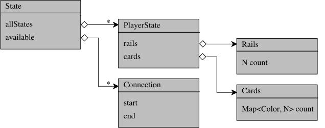
18.7 A Second Look at the Tiny Case Study
The guideline of following the arrows in a diagram has two consequences. First, the relationships of interfaces and classes essentially dictate how one method call others and, due to dynamic dispatch, this leads to small methods. Second, representing all forms of information with classes tends to make for easy decisions concerning atomic vs composite methods.
Let’s return to the example from Atomic vs Composite: A Tiny Case Study; seeing both designs should help you understand the most fundamental differences easily. The design of the legality check of a player’s action starts again with the development of a data representation.
// N is short for Natural (numbers)
class State:
List<PlayerState> allStates = ..
Set<Connection> available = ..
Boolean legalAction(Connection c):
PlayerState active = this.allStates.getActivePlayer()
c in available && active.legalAction(c)
PlayerState getActivePlayer()
..
class PlayerState:
Rails rails = ..
Cards cards = ..
Boolean legalAction(Connection conn):
Natural n = conn.segments()
Color c = conn.color()
this.rails.has(n) && this.cards.has(n,c);
class Rails:
N count = ..
Boolean has(N n):
this.count >= n
class Cards:
HashMap[Color, N] count = ...
Boolean has(N n, Color c)
this.count[c] >= n
Instead of diving right into the formal description of classes, we start with a
class diagram sketch. Take a look at figure 33. The diagram’s
entry point is the State class, which—
The idea is of course that the referee component keeps track of the game state. When a player requests to acquire and occupy a particular connection on the game map, the referee checks whether the connection is available and then delegates the rest of the computation to State.
Designing methods has to keep in mind what function the methods should jointly implement.
18.8 Why Systematic Design is Socially Responsible
Systematically designing helps both the creator of code and its future reader.
It starts with a purpose statement for both the development of a data
representation and pieces of functionality. If we accept that code is a message
from one developer to a future developer—
The last sentence intentionally substitutes “thesis” for “purpose statement.” You have likely written essays in response to some prompt. You know that paragraphs are the basic building blocks of essays, just like functions are the brick and mortar of code. Now imagine writing an essay or even a paragraph without first determining the focus of this unit of writing. The result will be convoluted prose. One sentence will present one idea, followed by a sentence that presented an unrelated idea. It will be prose that jumps from one thought to another, prose that makes readers lose their trains of thought. They will probably re-read pieces and re-read them again just to make some sense out of it. Eventually they may give up.
Which part of the information should a data structure represent? What should it not represent? Which part of the overall task does a piece of functionality implement? Which part of the task is excluded? Delegated to some other functionality?
The purpose statement for data representations consists of two parts: a representation and an interpretation. The former conveys how a piece of information becomes a piece of data, the latter tells a developer what a piece of data means as information. Consider the following examples: int distance, int weight, and int temperature. All three entities are integers; for all three kinds of information, there many ways of measuring them and turning them into data; and given some integers in whatever programming language, interpreting them properly needs help.
Exercise 21. Imagine two different ways to measure distance and turning it into an integer. Make up two different interpretations of an integer as a weight. Research how many different ways different people use to converse about temperature.
Let’s next look at each step for designing functionality and how each helps readers understand code.
The purpose statement for pieces of functionality concisely describe
what is computed; occasionally they describe how it is computed,
namely when the underlying algorithm is complex; and it should explain to
which task in the problem statement it is linked. Many times a
well-chosen method or function name accomplishes all three goals. But, it is
also true that too often developers conflate tasks, have overlapping
computations, and complicate ways to express a computation—
In many cases, a type signature tells readers almost everything they need to know about calling a method or function if it comes with a good name (and possibly a purpose statement). The combination saves time because a reader can skip the actual definition during a first pass over some component. This point holds especially in settings where programmers favor immutability; a basic method must compute its results from the values of its inputs and the object’s fields. In addition, a type signature is critical for someone who wishes to use the function for some other code; type signatures enable IDEs to make up essential hints, say, in what order arguments are passed. While adding a type signature is mandatory in statically typed programming languages, it is also important for untyped (or optionally typed) languages. They play the same role in these contexts, and some IDEs look for properly shaped comments that look like type signatures.
Yes, programming to a type signature in a language without type checking takes
mental discipline. The word “untyped” implies that the language comes without
a pre-defined notation for formulating types and, hence, it cannot check the
consistency of type annotations with code. Then again, the lack of a pre-defined
Maintaining mental discipline is hard, which is the primary reason
why many developers prefer typed languages. Types aren’t necessarily checked,
though. Worse, typed-checked programs may still go wrong in ways that are
essentially type errors. type notation gives the developer the freedom to
superimpose a rigorous notation that fits the problem. Writing down signatures
in this notation; defining all their elements; and programming to all these is
then the equivalent of mentally declaring and checking types—
Working through examples either leaves behind a “paper trail” of thoughts behind a complicated design and, at a minimum, yields unit tests. Both are extremely useful. Leaving behind a paper trail is imperative when a method implements a complicated algorithm. It illustrates how the method works with a concrete example, which gets the reader started. When combined with a look at the data representation, such worked examples also illuminate how the function takes care of other cases or corner cases.
A unit test serves a future reader and maintainer both as an illustration of what the function computes and what its calling protocol is. For both purposes, it is ideal if a programming languages allows developers to place short unit tests next to a function in the code. Here is an example of how this works, specifically how it works for a Racket version of the onTarget method from Names Matter:
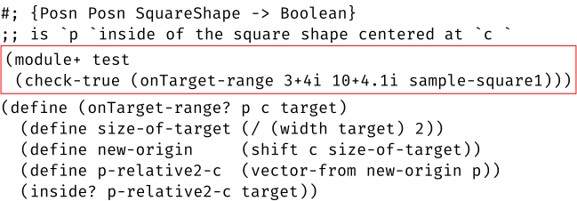
Even in Java, where unit tests cannot be placed next to a signature in an interface, developers follow a particular system of creating parallel directories and placing unit tests there. Everybody in this ecosystem knows about this system and can find examples (if not as conveniently as in Racket). IDEs help with this task; their attached testing framework look for the tests in these places and runs them on demand. Again, it is all about systematic development, protocols that programmers follow so that their successors can benefit.
The outline of a definition seems to become invisible once a developer
fills in the gap to complete the code.—
In sum, systematic development is about both creating and comprehending code. When developers follow such guidelines, they make themselves productive. A developer who knows about these guidelines can then easily comprehend the code weeks, months, or even years later,
19 Inspecting Code, Systematically
If developers design code systematically, they can also present it using the design system. Starting from the problem statement, they can start with a thorough explanation of the data representation. The problem statement also dictates the pieces of functionality needed, so it should justify the key functions and methods. When it comes to composite pieces of functionality, the developer may need to explain the design of the data that flows from one piece to another. Finally, the design steps for functions and methods provide the scaffolding for presenting each.
Conversely, when developers review the code of their peers, they can use the principles of systematic design to understand and critique the product. They can check whether the data representation matches the description of the information in the problem statement. They can request a purpose statement if a function looks incoherent and its name doesn’t help understanding it.
The ideas presented in the preceding section make up one particular system of design principles. This section demonstrates how these principles help with code inspections. To make this concrete, we first introduce a variant of the Ticket to Ride problem from A Sample Project: Analysis, Discovery, Planning: the Labyrinth game.
19.1 The Labyrinth Game: A Problem Statement
A Sample Project: Analysis, Discovery, Planning presents the analysis of a games-for-hackers project. A company provides game servers to which hackers can connect automated player components. The company’s idea is to use variants of board games, initially Ticket to Ride. Another game under consideration is Labyrinth.
The Labyrinth game takes place in an ever-changing maze of twisty passages. Players navigate these passages to collect treasures from uniquely identified places.
The game comes with fifty tiles. Each tile displays one of eight connector shapes and a unique, unordered pair of gems.
The referee uses 7 x 7 tiles to set up the initial game board. The last tile—
a spare— is kept on the side. The connector shapes on the tiles set up paths. Every even-numbered row and column of the board can slide in either direction. To move a row or column, a player inserts the current spare tile and pushes the row or column from one direction until the tile at the opposite end comes out. This other tile becomes the new spare. A player may not undo the sliding action of the preceding turn.
The game setup implies the existence of at least two pieces of functionality that participating hackers must implement for a data representation of the board:
the slide action for rows and columns;
the determination of tiles reachable from a current position.
19.2 Presenting Systematically Designed Code
If a milestone involves the development of a data representation, a presenter starts with an overview of the chosen data structures. For complex choices, it is best to include a justification and examples; for simple ones, a presenter may skip those.
// board representation for a game of Labyrinth
public class Board {
private Tile[][] grid; // row major
public Board(Tile[][] grid) {
\underline{this.checkDimensions(grid);}
\underline{this.checkGemUniqueness(grid);}
this.grid = grid;
}
// raise an exn if the dimensions don't satisfy the spec
private void checkDimensions(Tile[][] grid) {
...
}
...
}
// tile representation: gems plus path segments
public class Tile {
private UnorderedPair<Gems> gems;
private Char segments;
}
Figure 35: A Java data representation for the game of Labyrinth
Good morning. The goal of the current milestone is to develop a data representation for the game board and some of the obviously needed methods. | Sounds good. Tell us all about it. |
The first two steps of the development were pretty much straightforward. Since the game board consists of tiles, we created two classes (figure 35): Board and Tile. | That sounds right. What are Gems? |
A Gem is essentially a String. | Okay. |
We also have a data representation for directions. | Directions? |
The directions for the sliding actions. | Really? Shouldn’t an enumeration of the four possibilities suffice? |
That’s a choice we explored. It forced us to replicate code, so we came up with an alternative representation. | I guess we will explore it when we look at the functionality. Let’s focus on the board representation now. |
The Board class is essentially just a wrapper around a 2-dimensional array of tiles. | Where does the array store rows and columns? |
At first we struggled with this decision. In the end we decided it doesn’t matter. | Yes, from the perspective of the game it doesn’t matter, but we need to know. |
That’s why we documented it on line 2 of the class definition. | Thanks for pointing this out. Why does the constructor start with two method calls? |
The purpose of these calls is to ensure that every new Board object satisfies the game specifications. | Shouldn’t this invariant be established by the code that calls the constructor? |
We don’t think so but if we decided to re-arrange things like this, this would be easy. | True. We may make these checking methods public. But why do you disagree? |
Our course on designing classes taught us that a constructor should enforce such an invariant. | Yeah, you never know whether the calling code checks properly and, if the constructor does it, it’s guaranteed. |
Yes! | Do the remaining methods preserve the game specification for boards? |
... in the Board class ...
// raise an exn if any two tile display the same pair of gems
private void checkGemUniqueness(Tile[][] grid) {
Set<UnorderedPair<Gem, Gem>> seenGems = new HashSet<>();
for (Tile[] tileRow : grid) {
for (Tile cell : tileRow) {
if (seenGems.contains(cell.getGems()))
throw new IllegalArgumentException("duplicate gems");
seenGems.add(cell.getGems());
}
}
}
Figure 36: A Java constructor “contract” for the game of Labyrinth
Perhaps we should look at the constructor’s contracts first. | As you wish. But I bet checking dimensions is easy. |
I was thinking of the uniqueness check for gems (figure 36). | Go ahead. |
The purpose of this method is to raise an exception if it finds a problem. | Okay. |
It is an atomic method that traverses the given array with two nested for loops. | Doesn’t it have to track the gems it has seen? |
Yes, it uses an accumulator, a set of gems. | Why does it track them in a set? |
It is the fastest way to check whether one tile comes with the same gems as another. | Oh yes, that’s correct. Why does your code use “cell” as the name for each tile? |
We are thinking of the elements of an array as mutable cells. | Fine, let’s move on to actual functionality. |
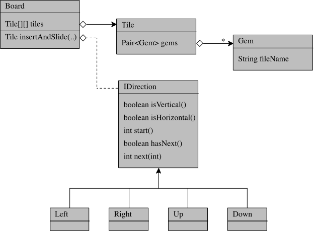
Figure 37: Doodling for the development of the board representation
It might be best if I start with the doodle diagram (figure 37) that my partner and I drew as we revised the first implementation of insertAndSlide. | Sure. What does the dashed line mean? I have never seen this before. |
That’s the key to this diagram. It says the method needs a data representation for directions. | Okay. But why? |
As we designed the functionality, we realized that the code for all four variants looked nearly the same. | Do you mean the code for sliding a row left or right and a column up or down? |
Precisely. And the differences were isolated in how the algorithm traverses just one sequence of tiles. | Interesting. |
With IDirection, there is just one major method for all four. | This sounds really cool. Let’s see |
Before I dive in, I just want to point out the three critical methods that IDirection specifies: start, hasNext, and next. | These make it look like an iterator. |
Almost. But an iterator didn’t quite work. | Got it. Let’s take a close look. |
The presenter could have shown this diagram at the very beginning of the code inspection but injecting it into the code walk now is the right choice. For the first part of the inspection, Board and Tile are the most relevant classes; the diagram for their relationship is trivial. By delaying the diagram to this point, it provides a good overview of the data needed to design the requested functionality.
class Board {
...
// effect: slide column `n` of this board if `d` is vertical;
// otherwise slide row -- by inserting `in`
// return the tile that's pushed out
public Tile insertAndSlide(Tile in, int n, Direction d) {
\underline{this.checkConsistency(n,d);}
Tile newSpare;
if (d.isVertical()) {
Tile[] seq = this.extractColumn(n);
newSpare = slide(seq,in,d);
replaceColumn(n,seq);
}
else {
Tile[] seq = this.extractRow(n);
newSpare = slide(seq,in,d);
replaceRow(n,seq);
}
return newSpare;
}
// raise an exn if `n` and `d` are incompatible
private void checkConsistency(int n, Direction d) {
... this.grid ...
}
...
}
Here is the implementation of the slide action (figure 38). | Okay. |
Our insertAndSlide method changes the board’s tiles array and returns the tile that is pushed out. | Why does it return this tile? |
The Board class is a data representation of the game board. The spare tile is separate from the game board. | True enough. Even the game description keeps the spare tile separate from the board. It is a part of the game state and when we design its data representation, we need to include the spare tile there. |
That was our thinking. | Make sure to double check the component descriptions. |
The method is given the tile to insert, a row or column index, and a direction. | That makes sense. |
Not all arguments make sense, and not all combinations make sense. So the method first runs a contract check. | Is this like the contract check in the constructor? |
Yes, it is. | Too bad Java doesn’t have a proper contract system. |
Indeed.— | This looks quite concise and elegant. But so far the code does seem to make sense. |
class Board {
...
// slide `seq` of this board in direction `d` by inserting `in`
// return the tile that's pushed `out`
private Tile slide(ArrayList<Tile> seq, Tile in, Direction d) {
Tile out = null;
for(int i = d.start(); d.hasNext(i); i = d.next(i)) {
out = seq.get(i);
rowN.set(i,in);
in = out;
}
return out;
}
private ArrayList<Tile> extractRow(int n) {
... this.grid ...
}
private void replaceRow(int n, Tile[] seq) {
... this.grid ...
}
private ArrayList<Tile> extractColumn(int n) {
... this.grid ...
}
private void replaceColumn(int n, Tile[] seq) {
... this.grid ...
}
}
Figure 39: Auxiliary Java methods for sliding a row or column
The slide method is atomic. Its purpose is to insert a tile into a one-dimensional array of tiles, shift the tiles in a given direction, and return the tile that is pushed out. | This sounds almost like the purpose of slideAndInsert. |
It differs in that this method is given a one-dimensional array. It does not work on grid. | Indeed. |
The method iterates over the array in the order specified via direction. At each step, it swaps out the tile in the current cell for the current value of in. When the loop is done out contains the tile that is pushed out through the sliding action. | Now the idea of a separate IDirection type makes complete sense. Each direction represents whether to start at one end or the other, how to proceed, and when to end. But for that, it must know the dimensions of the grid. |
True! We assume that some global Java interface will supply system-wide constants such as the grid size. | We need to double-check or update the component design to make sure this is true. |
We already added such an interface to the code base. We needed it for our unit tests. | Good but this should be reflected in the design. One last question. Why does the method initialize newSpare to null? Isn’t null bad? |
The for loop is going to replace it with the first tile in the array. | What if the array is empty? |
In that case, the method returns null unfortunately. | It could return in, which feels more natural. |
19.3 Inspecting Systematically Designed Code
a panelist’s question causes the presenter to veer from a basic plan;
the developer is stressed;
the design does not follow the basic principles; and
the presenter does not follow a top-down plan, possibly because the chosen programming language suggests a bottom-up organization;
class Board:
""" Represents the game Board, a matrix of Tiles
Args:
rows (int): its height
cols (int): its width
"""
def __init__(self, rows: int, cols: int, spare: Tile):
self.rows = rows
self.cols = cols
\underline{self-spare: Tile = spare}
self.board: List[List[Tile]] = self.__randomized_board()
\underline{self.last_slide_move: Optional[Slide] = None}
Figure 40: A Python data representation for the game of Labyrinth
So let’s take a look at how these problems may show up in a code walk and how a (head) panelist can use the principles to re-direct the presenter and make the inspection a success. To keep things familiar and yet inject some variety, the inspection covers the board design combined with the reachability functionality for the Labyrinth game; see .
Good morning. Here (figure 40) is the class we developed for milestone 2. | Why don’t you remind us of the goals? |
The first goal of the milestone is to create a data representation for the board. | And the second one? |
The second one is to develop some methods that might be useful to plan a trip through the maze. | Let’s focus on the data representation, since it is up on the screen already. |
Our board is just a matrix. The constructor takes in the number of rows and columns and generates the board. | Perhaps we should slow down and inspect the constructor line by line. There seems to be a conflict between the method header and the class’s purpose statement. |
Oh yes. The constructor also takes in a tile, which becomes the spare tile mentioned in the game description. | So is the spare tile a part of the board class? |
We figured it might as well be. | But the purpose statement mentions only a matrix. The spare doesn’t show up. Indeed, it is questionable that the spare tile is a part of the board. |
The fourth line of the constructor is the key. It makes a random board of the given size. | Why is the board always random? |
We figured games are played on new board configurations. | Unit tests will need fixed inputs so that the output is predictable. Can you show us the unit tests for your reachability method? |
Ah, we don’t have any. We had not considered unit tests. | Oh. |
We will address this gap soon. | We’re not done yet with the constructor. Please explain the last line of the constructor. |
Our reading the rules suggests that the board must represent the last sliding action. | Even if, this line introduces a new form of data. |
How so? | What is Slide? |
Oh yes, it is our data representation of a sliding action. | So it is another form of data. But what might be worse is that the purpose statement doesn’t mention this aspect. |
We will reword the purpose statement. | Reconsider your data representation. If you just implement the purpose statement and allow a deterministic setup, this is a fine unit of code. In the meantime, let’s move on to the requested functionality. |
In sum, this conversation shows how a panelist can use the planning and the
purpose statement to inspect the actual code. The planning process separates the
representation of the game state from the representation of a game board; the
latter should really just mirror the physical reality of the board. While the
purpose statement seems to suggest that the code implements this mirroring,
going through the five lines of the constructor reveals that this is not the
case. Finally, by keeping the remaining design principles in mind—
import collections
class Board:
...
def __horizontal(self, side, row, column, accessable_tiles): ...
def __vertical(self, side, row, column, accessable_tiles): ...
def __adjacent(self,row,column):
tile = self.grid[row][column]
accessible_tiles = []
for s in tile.accessible_sides:
if s == "left" or s == "right":
self.__horizontal(s, row, column, accessible_tiles)
else:
self.__vertical(s, row, column, accessible_tiles)
return accessible_tiles
def reachable_tiles(self, row, column):
"""
returns list of all accessible locations
"""
queue = collections.deque()
queue.append((row,column))
accessible_tiles = set()
path = []
while queue:
row, column = queue.popleft()
if (row, column) in accessible_tiles
or self.grid[row][column] == 0:
continue
accessible_tiles.add((row, column))
path.append((row, column))
for neighbor in self.__adjacent(row, column):
queue.append(neighbor)
path.remove((row,column))
return path
Figure 41: Python board functionality for the game of Labyrinth
Here is the first piece of the requested functionality (figure 41). | Okay. |
The first two methods are __horizontal and __vertical. | Stop! These are private methods. They can’t possibly be the starting point. |
No, they are not. | Which of the two pieces are you presenting? |
I am trying to present the functionality that computes the tiles that an avatar can reach from its current spot | Good. Why don’t we start with this method then. We will look at the private method if and when needed. |
Our code follows the on-line suggestion of putting magic methods first and public methods last. In this case, we want to focus on reachable_tiles. | Go for it. The purpose statement is clear. Consider adding an informal type signature, too. |
Noted. So the first four lines initialize the necessary data structures. | Stop! Please provide an overview. We already know that this method is a composite. So explain the general idea first. |
Okay. The reachable_tile method consists of a loop that needs three helper methods. | What is the basic purpose of these helpers? |
The important one is __adjacent. Given a grid position, it returns the list of immediately reachable neighbors. | That makes sense. As a matter of fact, that would be truly descriptive name for this method. It then wouldn’t matter that it comes without purpose statement. |
Noted. This method uses conditional to add vertical or horizontal neighbors to the list it is constructing. | Now the names of these two private methods make some sense. Let’s go back to reachable_tiles. |
As I said before, the method itself starts with four lines that set up basic data structures. | It might be best to describe the organization of the method body first. |
The method uses a worklist algorithm. Each element of the list is a grid position. The loop removes one of these positions, determines its immediately reachable neighbors, and sticks those back into the worklist. | This description makes sense. It is a common approach to implement recursive descriptions. How does it avoid following cycles in this labyrinth? |
A conditional checks whether the newly removed position is already on the list of reachable tiles. | Good. Let’s take a look at the details now. |
The first two lines initialize the worklist. | Why is it called queue? |
Yeah, worklist might be a better name. The third line creates the set of positions that the method has already visited. | Is it used for cycle detection? |
Indeed. And the last line sets up the list that the method eventually returns. | Why is this variable called path? In what sense is it a path? |
Come to think of it, the content does not at all describe a path. | What is the content? |
It’s the list of reachable coordinates. | This almost sounds like the last two variables represent the same information, one as a set and the other as a list. |
That’s quite possible. | Why does the method return a list? Could it return a set instead? |
We thought that the ordering might matter. | How? |
Since we don’t have any clients yet, we should be able to change the signature of the method so it returns the set. | Let’s keep this in mind. Explain the loop. |
The loop runs as long as there is a position in the deque. The first line of the loop body removes the leftmost position. And the conditional checks whether this position has been visited before. | Why is there a zero test? |
I forgot. We might have used 0 to mark empty grid positions. | Are there any? |
Not really. We should remove this part of the test. Anyways if the test succeeds, the rest of the loop body is skipped. | Okay. |
The next two lines update the set of visited positions and the path of accessible tiles. | The two lines add the exact same data to the containers. Since they contain the same data beforehand, they really are in sync all the time. |
Yes, we will reconsider just using one of them. | What does this nested for loop do? |
The call to __adjacent returns a list of grid positions that are immediate and reachable neighbors of the currently processed position. And the for loop adds them to the worklist. | Isn’t queue a container? |
It is. | So reachable_tiles could hand it to __adjacent and get it update? |
Yes. As a matter of fact __adjacent asks its helpers to do just that. | This might be worth considering then. |
class Board:
...
def reachable_tiles(self, row, column) -> Set[Tuple[int,int]]:
"""
returns the set of of locations reachable from (row,column)
uses a worklist algorithm of positions-still-to-visit
"""
reachables = set()
worklist = collections.deque()
worklist.append((row,column))
while worklist:
row, column = worklist.popleft()
if (row, column) in reachables
continue
reachables.add((row, column))
self.__add_adjacents(row, column, worklist)
return reachables
19.4 Inspection Guide
plan top-down; develop bottom-up; present top-down
20 API
|
ENCAPSULATION here? |
|
|
bespoke vs generally useful |
|
design vs expression |
|
design: |
- create feedback loop; |
- program to drafts; |
- evaluate (performance, usability, clarity) |
- fix; |
- repeat |
- after release: be prepared to fix; how critical is backwards compatibility |
|
expression: |
- types: static checks; highly successful |
- behavioral contracts; often documented |
- pure pre and post conditions; |
- dependency on argument -- does it get checked in the post condition? |
- protocols: almost always documented only |
- order of calls |
- history dependency of calls |
21 Systematic Abstraction
21.1 Abstracting with Functions
21.2 Abstracting with Classes
strategies: IStrategy, AStrategy, ...
The purpose of a strategy component is to make decisions on behalf of the player component, which deals with the mechanics of playing the game.
For example, the Ticket to Ride game requires three kinds of decisions. During setup, the player must pick destinations—
pairs of cities— that it wishes to connect by acquiring and occupying connections. During a turn, it must decide whether to request additional colored cards or to collect a connection; it cannot do both. Finally, if the player decides to acquire a connection, it must choose one.
imagine a product manager asking for two sample strategies, called Hold10 and BuyNow. More specifically, the request might come with sentences like “the second strategy, BuyNow, shares some pieces of functionality with the first, Hold10.”
an interface, to which other developers can program without committing to a concrete strategy
concrete classes, which implement the common interface.
an abstract class, which can set up common concrete methods but also common abstract methods for all concrete strategies.
Figure 43 displays how a developer should turn these planning steps into a proper (module) implementation. It defines an interfaceTechnically, this Racket module defines a class contract, a sophisticated form of interface. Unlike in Java, such a contract can also specify the fields that every constructor must initialize. with signatures for the key pieces of functionality.
#lang racket
(provide strategy/c%)
(define strategy/c%
(class/c
(init-field
(the-game-map game-map?)
(rails# natural?)
(cards (hashof color? natural?)))
;; pick destinations from the given set for the map
;; return the _rejected_ destinations
(pick (->m (setof destination?) (setof destination?)))
;; choose to ask for more cards or a specific connection
(turn (->m pstate? (or/c MORE-CARDS connection?)))))
Figure 43: Basic abstraction in class-based object-oriented language
To indicate how the concrete logic is organized, a developer may supplement this interface definition with a class diagram in the same file or a “read me” file. Here is an ASCII diagram from the actual implementation:
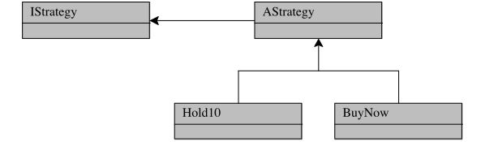
Such a diagram immediately helps a reader with the navigation of the code base, especially if the files are named appropriately. The interface is implemented by an abstract class, from which the developer has derived two concrete classes.
Exercise 22. In order to test the referee component properly, a full-fledged implementation of any game will need misbehaving player components. One way to implement such players is to equip with cheating strategies, which will exercise the referee’s legality checking during integration testing.
The Cheat strategy is like the BuyNow strategy but attempts to acquire a non-existent connection ...
22 Module and API Design
contracts !!
Here is a piece of functionality:
(define (create width height channels colorspace) |
(unless (> width 0) |
(error 'create "expected width > 0: ~a" width)) |
(unless (> height 0) |
(error 'create "expected height > 0: ~a" height)) |
(define size (* width height)) |
(unless (<= size P-MAX) |
(error 'create "expected width * height <= ~a: ~a" P-MAX) size)) |
(unless (<= 3 channels 4) |
(error 'create "expected channels = 3|4: ~a" channels)) |
(unless (<= 0 colorspace 1) |
(error 'create "expected colorspace = 0|1: ~a" colorspace)) |
(define load (make-bytes (* 4 size))) |
(private-image width height channels colorspace load)) |
Instead write a contract that informs client programmers about the constraints:
[create
(-> (and/c integer? (>/c 0))
(and/c integer? (>/c 0))
(between/c 3 4)
(between/c 0 1)
image?)]
(define (create-image width height channels colorspace)
(define size (* width height))
(unless (<= size P-MAX)
(error 'create "expected width * height <= ~a: ~a" P-MAX size))
(define load (make-bytes (* 4 size)))
(private-image width height channels colorspace load))
If it is critical to let the “client” of create know about the size restriction, incorporated a constraint into the contract:
[create |
(->i ([width (and/c integer? (>/c 0))] |
[height (and/c integer? (>/c 0))] |
[channels (between/c 3 4)] |
[colorspace (between/c 0 1)]) |
#:pre (width height) (<= (* width height) P-MAX) |
(r image?))] |
|
(define (create-image-2 width height channels colorspace) |
(define size (* width height)) |
(define load (make-bytes (* 4 size))) |
(private-image width height channels colorspace load)) |
- the ``game plan'' |
- the milestones, planning one step ahead |
- iterative: refine as you go but keep the overall idea in mind |
- contracts? |
: Methods and Functions are the Basic Building Blocks |
- keep them small |
- develop them systematically: design recipe |